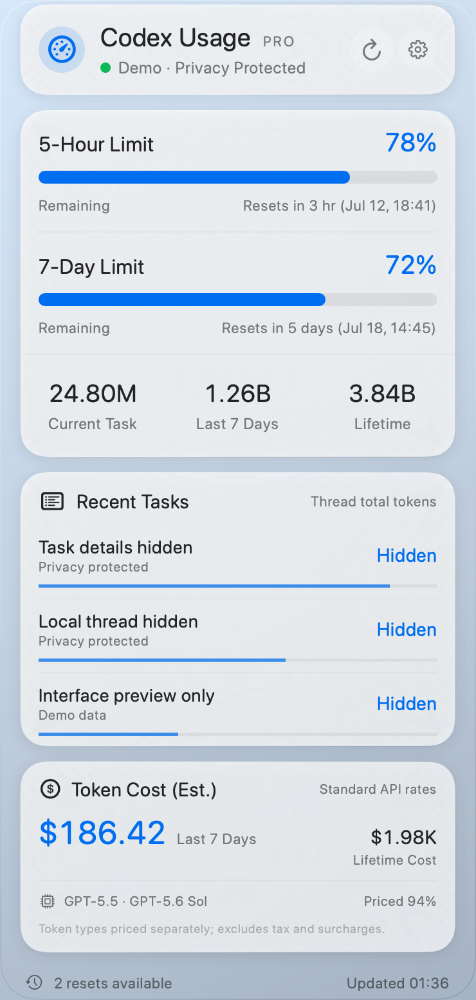

UMA
Usage MonitorKnow your limits. Keep your flow.
A native macOS companion for Codex usage, limits, and recent tasks. Built to make the numbers easier to see, right from the menu bar.
Behind the project
- The question
- How can keeping track of AI usage feel like a natural part of the desktop, instead of another dashboard to manage?
- What I’m working toward
- Clearer interfaces, useful usage context, and a dependable native Mac experience.
- Where you can help
- Try the public project, share a confusing moment, or bring a fresh product perspective.